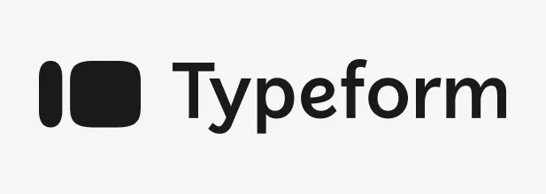
Typeform Usability Evaluation
Usability Case Study
Conducted a comprehensive usability evaluation on Typeform, a popular form-building platform, to assess its learnability, performance, and user satisfaction. The project involved heuristic evaluation, usability testing with real users, and data analysis to identify pain points and provide actionable recommendations.
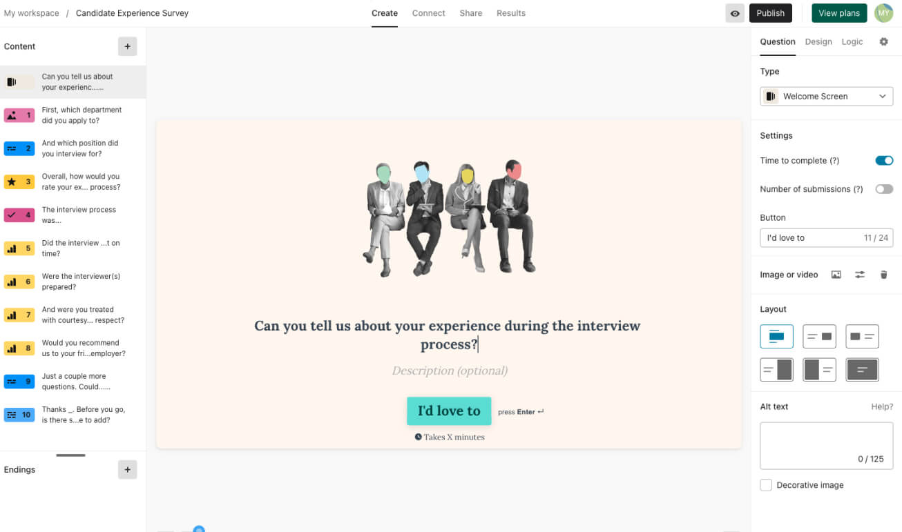
Project Overview
The Challenge
Typeform is known for its minimalist interface, but we wanted to evaluate whether functionality was sacrificed for the sake of sleek design. The goal was to measure how easily new users could create and publish a survey without prior experience.
Our Approach
We conducted a two-phase evaluation: a heuristic assessment using Nielsen Norman's principles followed by usability testing with participants completing 8 tasks while engaging in think-aloud activities.
Heuristic Testing → Script + Task Writing → Pilot Testing → User Testing → Analysis
Evaluation Goals
- Learnability: Measure time to create a thorough survey with various query types
- Performance: Identify actions causing difficulty or confusion
- Satisfaction: Evaluate user enjoyment and satisfaction
- Accessibility: Assess compliance with accessibility standards
Key Research Findings
1. Branching Logic Challenges
Participants struggled significantly with creating branching logic in their forms. The interface for setting up conditional paths was not intuitive, leading to low success rates.
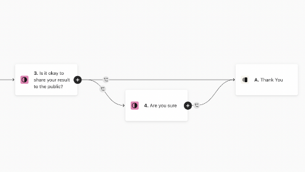
2. Unclear Iconography
The matrix icon and other interface elements lacked clear labeling, causing confusion about their functionality. Users hesitated when encountering these elements.
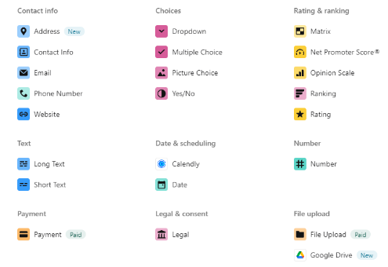
3. Preview Feature Difficulties
Users had trouble locating and using the preview feature to test their forms before publishing. The icon and its functionality were not immediately recognizable.
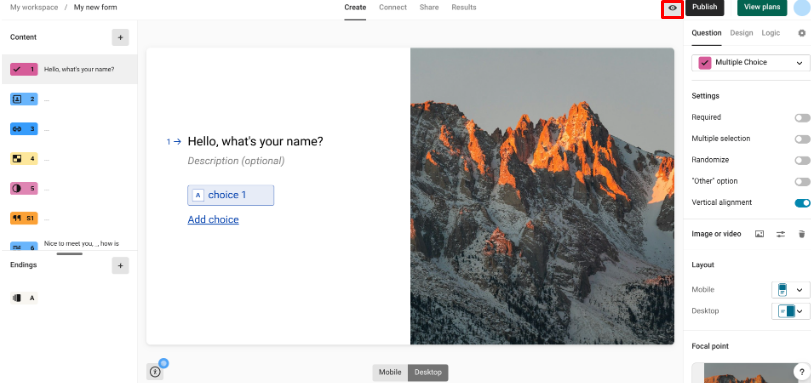
4. Accessibility Barriers
The platform showed several accessibility shortcomings, particularly in menu navigation and form controls that didn't fully comply with WCAG standards.
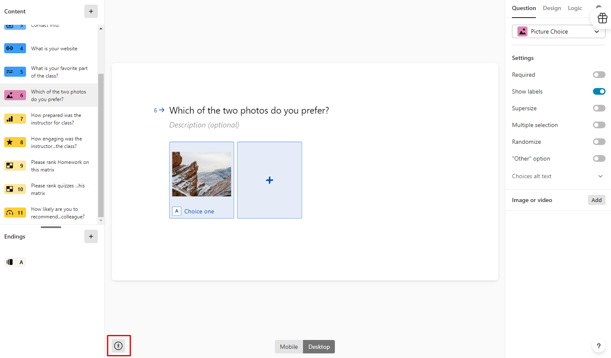
Data Analysis
Quantitative Results
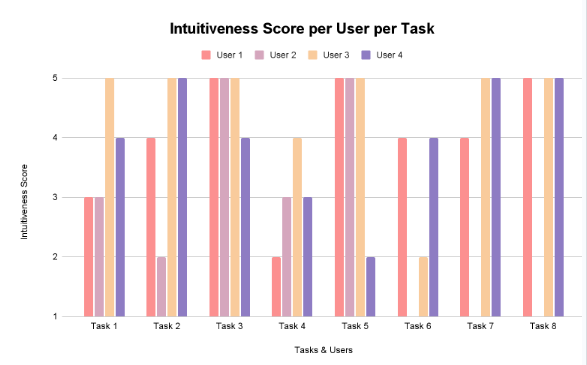
According to user data from the post-task questionnaires, tasks 4,6,7, and 8 seemed to be the hardest for users in general.
Qualitative Insights
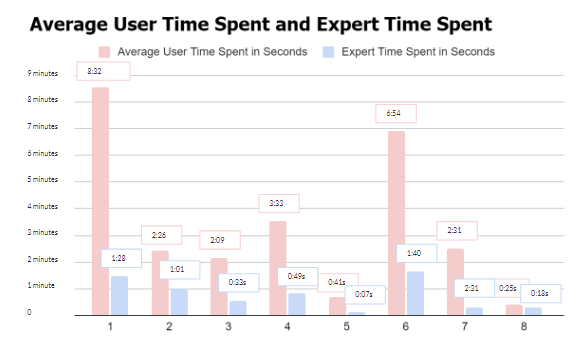
Tasks with large time gaps between expert and new users (like branching logic) suggest features that are harder to learn and need better onboarding.
Success Rate
Basic form creation tasks had 85-100% success rates, while advanced features dropped to 40-60%.
Time on Task
Average completion time for complex tasks was 3-4x longer than simple ones, indicating steep learning curves.
Error Frequency
Users made most errors when trying to configure conditional logic and accessibility settings.
Design Recommendations
Descriptive Labels
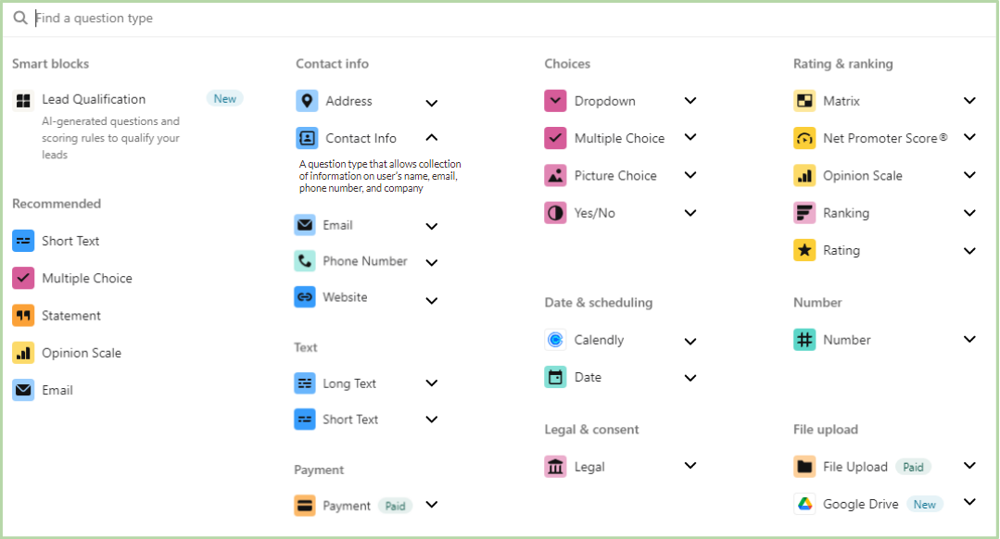
Add clear descriptions to interface elements to clarify their purpose and functionality.
Contextual Help
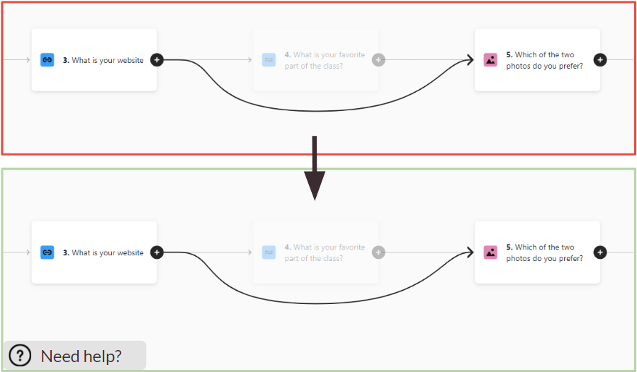
Implement visible help options for complex features like branching logic with tooltips and guided walkthroughs.
Icon Improvements
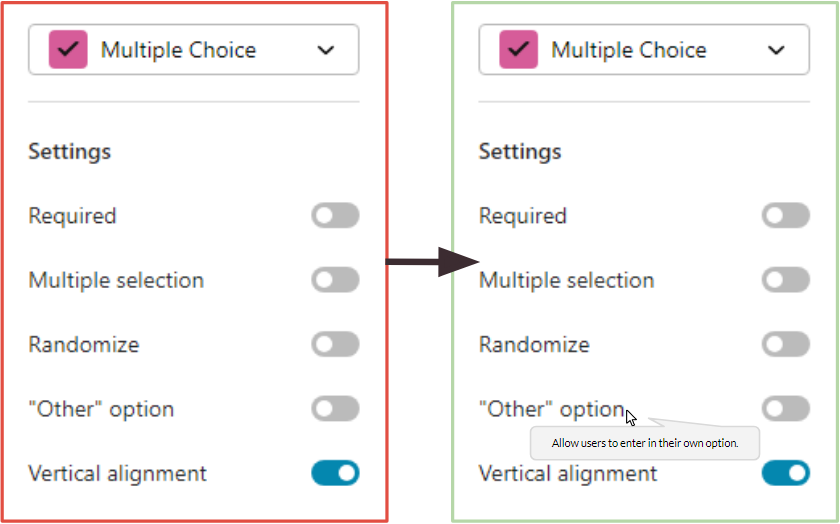
Enlarge feature icons and add text labels to make functionality more discoverable.
Reflection
This evaluation revealed that while Typeform excels at basic form creation, its more advanced features present significant usability challenges. The minimalist design approach, while aesthetically pleasing, sometimes obscures functionality.
The most surprising finding was how much small interface changes could potentially improve the user experience. Simple additions like descriptive labels and contextual help could dramatically reduce the learning curve for advanced features.
If we had more time, we would conduct follow-up testing with our recommended design changes to validate their effectiveness. We'd also explore creating progressive disclosure of advanced features to better support new users while maintaining power for experienced ones.